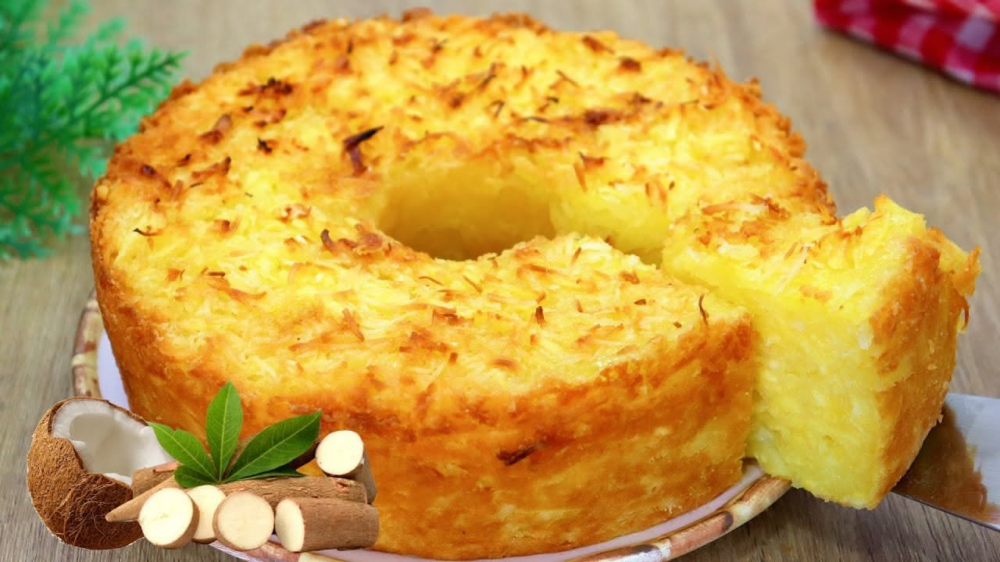

Doces · Tortas e bolos
Bolo de mandioca

Ingredientes
- 2 1/4 xícaras de mandioca ralada fina
- 2 1/4 xícaras de queijo-de-minas meia cura ralado
- 2 1/4 xícaras de açúcar
- 1 1/4 xícara de leite
- Canela e cravo em pó (1 colher café de cada)
- 8 ovos ligeiramente batidos
- Manteiga, canela e açúcar para polvilhar
Modo de preparo
- Pré-aqueça o forno a 180 °C. Misture mandioca, queijo, açúcar, leite e especiarias.
- Junte os ovos; asse em assadeira 24×34 cm ~45 min.
- Polvilhe canela com açúcar; esfrie, corte em quadrados e congele.
Observação
Rendimento: 12 porções.